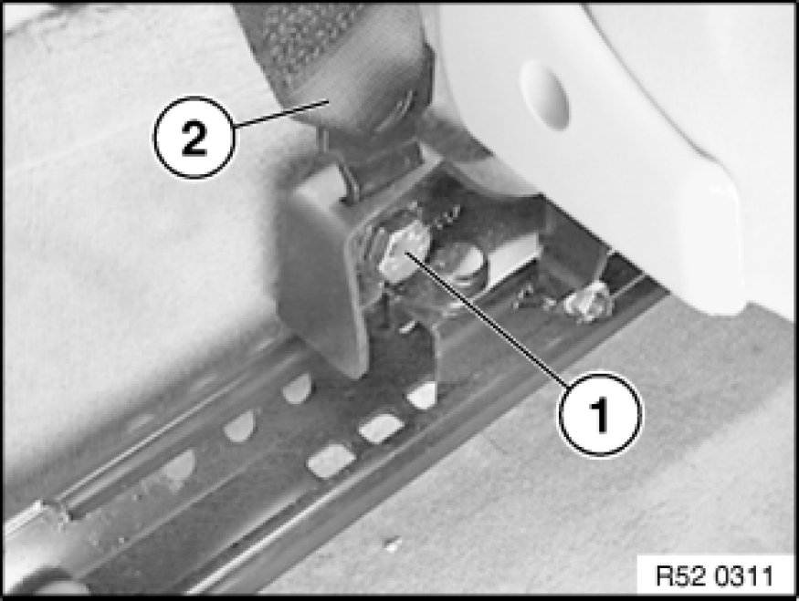
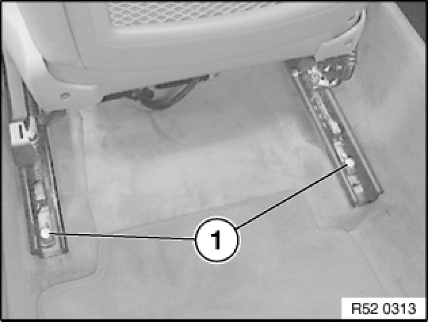
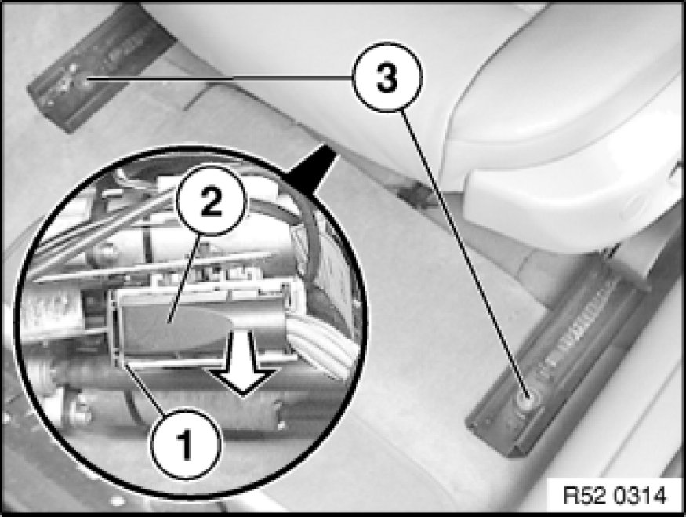

Front Seat, Normal, Manual
52 13 000 - Removing and installing left or right front seat (normal/manual)

Necessary preliminary tasks:
- Remove head restraint
- Adjust front seat as far forward and upward as possible.

Warning!
Read and comply with safety regulations for handling airbag modules and pyrotechnical belt tensioners.
Improper handling can lead to triggering of the pyrotechnical seat belt tensioner or side airbag, resulting in injuries.
Switch off ignition.

Saloon only:
Release seatbelt screw (1) and feed out seatbelt strap (2).
Tightening torque 72 11 1AZ Specifications.

All:
Release screws (1) at rear.
Tightening torque 52 10 1AZ [1][2]Seats.
Installation Note:
Replace screws.
Move front seat as far back as possible.

Unclip cover at front.
Release nuts (3) at front.
Installation Note:
Replace nuts.
Move front seat down and seat runners forward so that they are flush.
Unlock lock (1) and disconnect plug connection (2).
Important!
Cover door sill with protective covers (risk of damage).
Lift out front seat.

Installation Note:
Carpet must not get between seat rails and floor pan in area of fastening points (grating noises).
Tightening torque 52 10 1AZ [1][2]Seats.